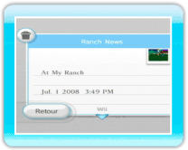

|
19
|
Album
|
 |
|
Tu peux voir les photos que tu as prises au Ranch ou envoyer
tes photos sur le Wii Message Board (Bureau Wii). Tu peux conserver
jusqu'à 20 photos dans ton album et tu peux les sauvegarder sur une
carte SD. Album
Lorsque tu sélectionnes Album dans le menu principal, un
écran Album s'affiche. Lorsque tu veux voir une autre photo, pointe
la flèche verte, (gauche ou droite),
Back (retour)
Quitter l'écran de l'album. Save to SD Card (sauvegarder sur
une carte SD)
Sauvegarde les photos de My Pokémon Ranch sur une
carte SD (au format .jpeg). Delete all pictures on SD Card
(effacer toutes les photos sur une carte SD)
Efface toutes les photos de My Pokémon Ranch qui sont sauvegardées sur la carte SD.  Post on the Wii Message Board (envoyer les
photos sur le Bureau Wii)
Tu peux envoyer les photos et les regarder sur le Bureau Wii. Secure/Cancel Secure
(protéger/déprotéger)
Tu peux protéger ou annuler la protection d'une photo. Lorsqu'une photo est protégée, elle ne sera pas effacée. Tu peux protéger jusqu'à 19 photos. Delete (effacer)
Tu peux effacer la photo qui est affichée. Remarques à propos des cartes SD
|
 , ou
, ou  .
.
 |
 |
 |